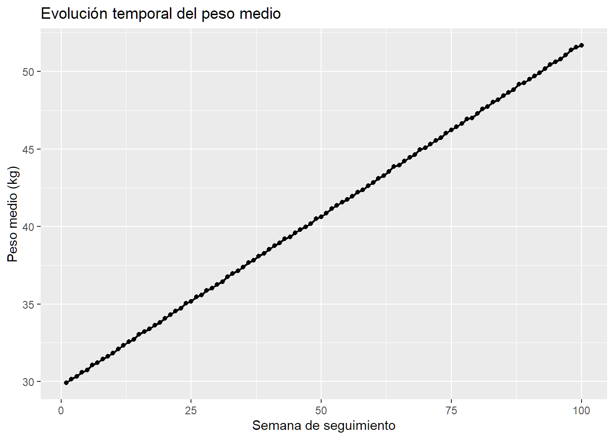
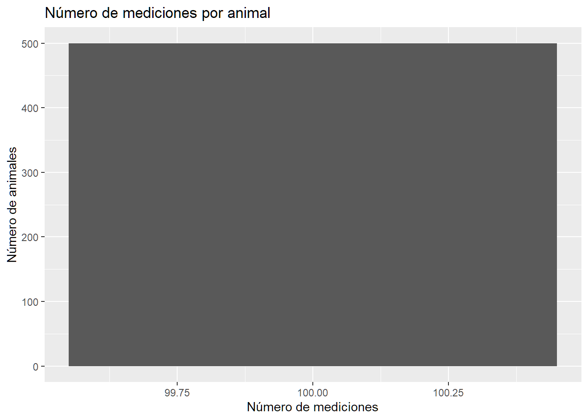
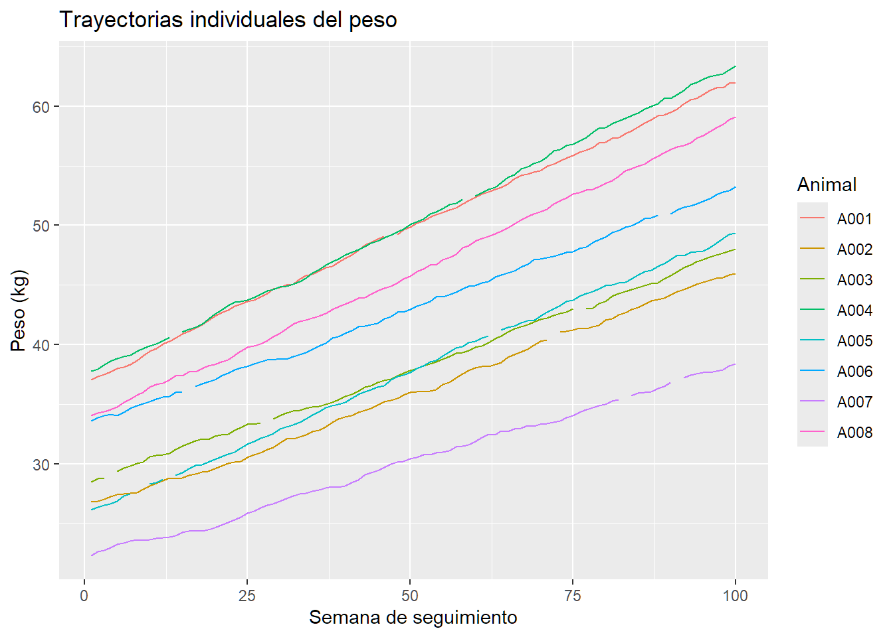
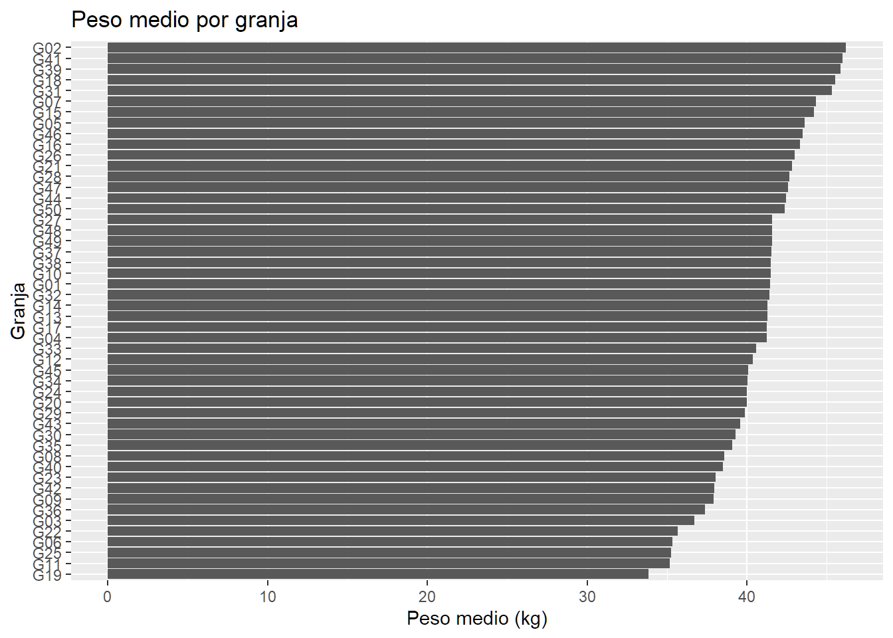
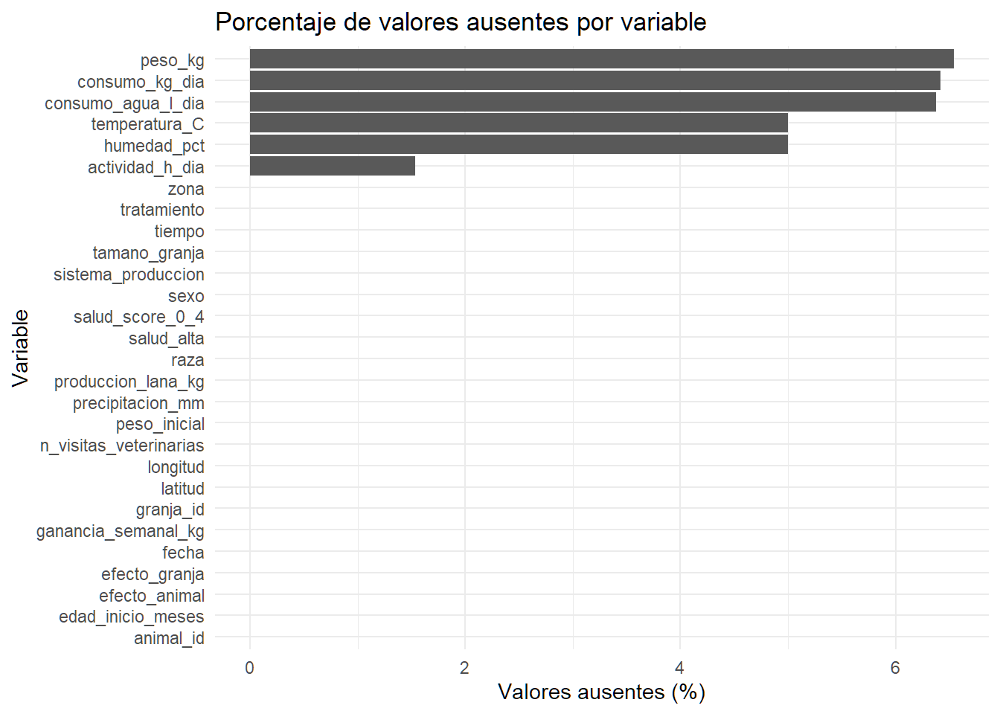
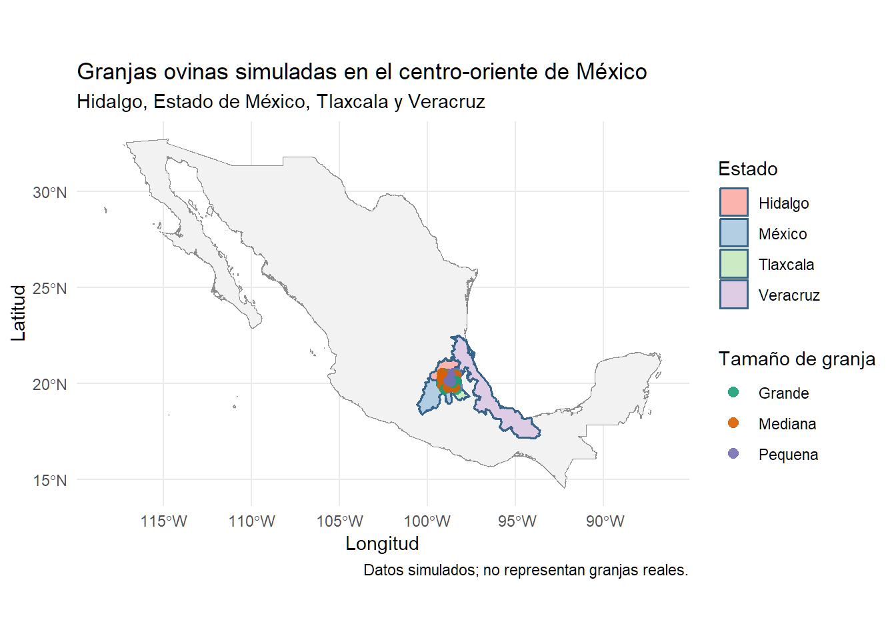

En este bloque vamos a aprender a reconocer la estructura de una base de datos y a realizar las primeras comprobaciones antes de aplicar métodos estadísticos. Utilizaremos una base de datos simulada de ovinos de Hidalgo, México, con información de animales pertenecientes a diferentes granjas y observados repetidamente a lo largo del tiempo.
El objetivo es comenzar con una pregunta sencilla: ¿cómo cambia el peso de los animales durante el seguimiento y existen diferencias entre granjas? Para responderla, primero debemos comprender qué representa cada registro, cómo se importan los datos y qué problemas pueden aparecer durante su preparación.
La base simulada representa animales, granjas, características individuales, condiciones ambientales y mediciones repetidas durante varias semanas. Los datos son ficticios y se utilizan exclusivamente con fines didácticos.
2.1 Importación desde Excel o CSV
Antes de analizar una base de datos, debemos importarla correctamente. El procedimiento depende del formato del archivo. Excel puede contener varias hojas, cada una con una tabla diferente, mientras que un archivo CSV suele contener una sola tabla delimitada por comas, punto y coma u otro separador.
Para importar un archivo Excel utilizaremos el paquete readxl. La función excel_sheets() permite comprobar los nombres de las hojas y seleccionar la que contiene las mediciones longitudinales.
Código
# Instalar los paquetes si es necesario.# install.packages(c("readxl", "readr", "dplyr", "ggplot2",# "corrplot", "naniar"))library(readxl)library(tidyverse)library(corrplot)library(naniar)# Consultar la carpeta de trabajo.getwd()
[1] "C:/Users/Usuario/OneDrive - Universitat de les Illes Balears/Documentos/2026/Mexico/Mexico/modulos"
Código
# Nombre del archivo Excel.archivo <-"../datos/base_borregos_espaciotemporal_Hidalgo.xlsx"# Consultar las hojas disponibles.excel_sheets(archivo)
La ruta del archivo debe corresponder a su ubicación real. Si R no encuentra el archivo, podemos modificar la carpeta de trabajo o utilizar una ruta completa. Es recomendable organizar los archivos del proyecto en una misma carpeta para evitar problemas al ejecutar el código en otro ordenador.
Si trabajamos con CSV, podemos utilizar read_csv() del paquete readr.
Código
# Importar un CSV separado por comas.datos_csv <-read_csv("../datos/mastitis.csv",show_col_types =FALSE)# Si el archivo utiliza punto y coma:# datos_csv <- read_delim(# "datos_long.csv",# delim = ";",# show_col_types = FALSE# )
La elección del separador es importante. Si el archivo utiliza punto y coma y lo importamos suponiendo que utiliza comas, podemos obtener una tabla mal estructurada. También debemos prestar atención al separador decimal, porque algunos programas utilizan comas en lugar de puntos.
Después de importar los datos, conviene revisar siempre el número de filas y columnas, los primeros registros y los tipos de variables detectados. Una importación aparentemente correcta puede contener errores que afecten a los análisis posteriores.
Código
# Revisar los tipos de las variables.glimpse(datos)
# Examinar algunas columnas.class(datos$animal_id)
[1] "character"
Código
class(datos$fecha)
[1] "POSIXct" "POSIXt"
Código
class(datos$peso_kg)
[1] "numeric"
Los identificadores pueden estar formados por números, pero eso no significa que deban tratarse como variables cuantitativas. Por ejemplo, el identificador 105 no representa una cantidad biológica superior al identificador 104. Su función es reconocer una entidad y permitir relacionar sus observaciones.
2.2 ¿Qué es una fila, una variable y una observación?
Una base de datos suele organizarse en filas y columnas. Cada columna representa una variable, es decir, una característica que queremos registrar o estudiar. Algunos ejemplos son el peso del animal, la raza, el consumo de alimento, la temperatura ambiental y la fecha de medición.
Las filas contienen registros de las unidades estudiadas. Sin embargo, es importante distinguir entre una fila y una unidad biológica. En una base transversal, cada fila podría representar un animal medido una sola vez. En una base longitudinal, como la que utilizaremos, cada fila representa una medición de un animal en un momento determinado.
Por ejemplo, si observamos un animal durante 100 semanas, ese animal puede aparecer en 100 filas. Todas esas filas comparten el mismo identificador de animal, pero corresponden a momentos diferentes. Por tanto, 50.000 filas no significan necesariamente que tengamos 50.000 animales.
Esta distinción es importante para el análisis estadístico. Las mediciones del mismo animal suelen estar relacionadas porque su peso actual depende, entre otras cosas, de su estado previo. De forma similar, los animales de una misma granja comparten alimentación, manejo y condiciones ambientales. No podemos asumir automáticamente que todas las filas son independientes.
La función dim() muestra el número de filas y columnas. head() permite inspeccionar los primeros registros, mientras que names() y str() ayudan a reconocer las variables y sus tipos.
Podemos resumir la estructura general de la base mediante el número de registros, animales, granjas y semanas.
Código
datos |>summarise(n_filas =n(),n_animales =n_distinct(animal_id),n_granjas =n_distinct(granja_id),n_semanas =n_distinct(tiempo),n_fechas =n_distinct(fecha) )
Si hay 50 granjas, 10 animales por granja y 100 semanas de seguimiento, esperaríamos 500 animales y, si todas las mediciones estuvieran presentes, 50.000 registros. No obstante, siempre debemos comprobar los resultados reales de la importación en lugar de asumir que la base contiene exactamente esas cantidades.
Una primera exploración consiste en calcular el peso medio por semana y representarlo gráficamente.
Código
peso_semanal <- datos |>group_by(tiempo) |>summarise(peso_medio_kg =mean(peso_kg, na.rm =TRUE),n_mediciones =sum(!is.na(peso_kg)),.groups ="drop" )ggplot(peso_semanal,aes(x = tiempo, y = peso_medio_kg)) +geom_line(linewidth =0.8) +geom_point(size =1.5) +labs(title ="Evolución temporal del peso medio",x ="Semana de seguimiento",y ="Peso medio (kg)" )

Este gráfico permite observar la tendencia general del peso durante el seguimiento. Sin embargo, la media puede ocultar diferencias entre animales y granjas. Además, una tendencia temporal no demuestra por sí sola que el tiempo sea la causa del cambio observado. Para comprender mejor los datos, tendremos que estudiar tanto la variabilidad individual como las diferencias entre granjas.
2.3 Tipos de variables, identificadores y estructura longitudinal
Las variables pueden clasificarse según la información que contienen. Las cuantitativas representan cantidades medibles, como el peso, el consumo de agua o la temperatura. Las categóricas describen grupos, como la raza o el sistema de producción. Las variables temporales indican cuándo se realizó una medición, mientras que las variables espaciales permiten localizar geográficamente una granja.
También debemos distinguir entre variables de identificación y variables de análisis. Los identificadores, como animal_id y granja_id, permiten reconocer a los animales y las granjas. Las variables de respuesta, como peso_kg, representan los resultados que queremos estudiar. Las variables explicativas, como la edad, la temperatura o el consumo de alimento, pueden ayudarnos a comprender las diferencias observadas.
La estructura longitudinal aparece cuando una misma unidad se mide repetidamente. En nuestro ejemplo, cada animal tiene varias observaciones a lo largo del tiempo. Esto permite estudiar su evolución, pero genera dependencia entre registros del mismo animal. Asimismo, los animales de una misma granja comparten características y condiciones de manejo.
Estas dependencias son la razón por la que más adelante utilizaremos modelos mixtos y modelos espacio-temporales. Antes de aplicarlos, debemos identificar correctamente los animales, las granjas y los momentos de observación.
La siguiente tabla resume las principales variables de la base que utilizaremos en el curso.
Variable
Tipo
Unidad o categorías
Utilidad en el análisis
animal_id
Identificador
Código de animal
Reconocer las mediciones del mismo animal.
granja_id
Identificador
Código de granja
Identificar la explotación de origen.
tiempo
Temporal discreta
Semana
Ordenar las mediciones longitudinales.
fecha
Temporal
Fecha calendario
Situar las observaciones en el calendario.
latitud
Espacial numérica
Grados decimales
Localización norte-sur de la granja.
longitud
Espacial numérica
Grados decimales
Localización este-oeste de la granja.
raza
Categórica
Raza sintética
Comparar grupos raciales.
sexo
Categórica
Categorías definidas en la simulación
Describir características individuales.
edad_inicio_meses
Numérica
Meses
Ajustar por la edad al inicio del seguimiento.
zona
Categórica
Zona geográfica simulada
Explorar diferencias entre zonas.
tamano_granja
Categórica u ordinal
Categorías de tamaño
Comparar explotaciones de distinta dimensión.
sistema_produccion
Categórica
Sistema de producción
Estudiar diferencias de manejo.
temperatura_C
Numérica
Grados Celsius
Evaluar condiciones ambientales.
humedad_pct
Numérica
Porcentaje
Caracterizar la humedad ambiental.
precipitacion_mm
Numérica
Milímetros
Caracterizar las precipitaciones.
peso_kg
Numérica
Kilogramos
Variable de respuesta principal.
ganancia_semanal_kg
Numérica
Kilogramos por semana
Estudiar el incremento de peso.
consumo_kg_dia
Numérica
Kilogramos por día
Analizar el consumo de alimento.
consumo_agua_l_dia
Numérica
Litros por día
Analizar el consumo de agua.
actividad_h_dia
Numérica
Horas por día
Explorar la actividad diaria.
salud_score_0_4
Ordinal
Escala de 0 a 4
Representar una puntuación de salud.
salud_alta
Binaria
0/1 o categorías equivalentes
Analizar un resultado de salud binario.
produccion_lana_kg
Numérica
Kilogramos
Explorar la producción de lana.
n_visitas_veterinarias
Conteo
Número de visitas
Estudiar la frecuencia de visitas veterinarias.
tratamiento
Categórica o binaria
Categorías de la simulación
Comparar grupos de tratamiento.
Los tipos indicados en la tabla deben confirmarse en la base importada. Por ejemplo, una puntuación de salud de 0 a 4 suele ser ordinal: sus valores tienen un orden, pero no necesariamente existe la misma distancia biológica entre todas las categorías. Del mismo modo, una variable binaria puede estar codificada como números, texto o factor, y debemos comprobar su significado antes de ajustar un modelo.
Podemos revisar cuántos animales, granjas y categorías hay en los datos.
Código
datos |>summarise(n_animales =n_distinct(animal_id),n_granjas =n_distinct(granja_id),n_razas =n_distinct(raza),n_sistemas =n_distinct(sistema_produccion) )
# A tibble: 3 × 2
sistema_produccion n
<chr> <int>
1 Extensivo 19000
2 Intensivo 7000
3 Semi-intensivo 24000
Código
count(datos, tratamiento)
# A tibble: 2 × 2
tratamiento n
<chr> <int>
1 No 47758
2 Si 2242
En una base longitudinal, cada animal se observa repetidamente a lo largo del tiempo, pero no necesariamente tiene que presentar el mismo número de observaciones que los demás. El número de mediciones depende del diseño del estudio, de la frecuencia de muestreo, de las incorporaciones o salidas de animales y de posibles pérdidas de seguimiento. Una estructura en la que todos los animales tienen el mismo número de mediciones se denomina equilibrada, mientras que una estructura con distinto número de mediciones se denomina desequilibrada. Ambas pueden ser apropiadas para el análisis estadístico. Lo importante es comprobar que la distribución temporal de las observaciones es coherente con el diseño del estudio e identificar posibles problemas de registro o seguimiento.
Código
mediciones_por_animal <- datos |>count(animal_id, name ="n_mediciones")summary(mediciones_por_animal$n_mediciones)
Min. 1st Qu. Median Mean 3rd Qu. Max.
100 100 100 100 100 100
Código
ggplot(mediciones_por_animal,aes(x = n_mediciones)) +geom_bar() +labs(title ="Número de mediciones por animal",x ="Número de mediciones",y ="Número de animales" )

También podemos representar las series temporales de varios animales para observar si siguen trayectorias similares.
Código
animales_ejemplo <- datos |>distinct(animal_id) |>slice_head(n =8)datos_ejemplo <- datos |>semi_join(animales_ejemplo, by ="animal_id")ggplot(datos_ejemplo,aes(x = tiempo, y = peso_kg,group = animal_id, color = animal_id)) +geom_line(na.rm =TRUE) +labs(title ="Trayectorias individuales del peso",x ="Semana de seguimiento",y ="Peso (kg)",color ="Animal" )

Para explorar diferencias entre granjas, calcularemos el peso medio de cada explotación. Como los animales se miden repetidamente, este resumen combina información de varios animales y semanas. Por ello, conviene recordar que se trata de una descripción general y no de una comparación ajustada por edad, raza o condiciones ambientales.
Código
peso_granja <- datos |>group_by(granja_id) |>summarise(peso_medio_kg =mean(peso_kg, na.rm =TRUE),n_animales =n_distinct(animal_id),n_mediciones =sum(!is.na(peso_kg)),.groups ="drop" )ggplot(peso_granja,aes(x =reorder(granja_id, peso_medio_kg),y = peso_medio_kg)) +geom_col() +coord_flip() +labs(title ="Peso medio por granja",x ="Granja",y ="Peso medio (kg)" )

Las diferencias entre las medias de las granjas pueden reflejar factores biológicos, ambientales o de manejo. Sin embargo, también pueden depender de la composición de los animales observados en cada explotación. Para separar estas posibilidades necesitaremos modelos que tengan en cuenta la estructura jerárquica de los datos.
Otra herramienta exploratoria es la correlación entre variables cuantitativas. La correlación de Pearson mide la intensidad y dirección de una relación lineal entre dos variables. Sus valores se encuentran entre -1 y 1. Una correlación positiva indica que los valores altos de una variable tienden a acompañarse de valores altos de la otra; una correlación negativa indica una tendencia opuesta.
La correlación no demuestra causalidad. Dos variables pueden estar correlacionadas porque una influye en la otra, porque ambas dependen de una tercera variable o porque comparten una tendencia temporal. En datos longitudinales, además, calcular correlaciones agrupando todas las filas puede dar una imagen engañosa debido a las mediciones repetidas.
Para comenzar, calcularemos las correlaciones entre algunas variables numéricas de interés.
La matriz de correlación permite identificar relaciones que merecen una exploración posterior. Si dos variables explicativas presentan una correlación muy alta, podría existir colinealidad al incluir ambas en un modelo. Antes de sacar conclusiones, debemos comprobar que las variables tienen sentido biológico y que las correlaciones no están dominadas por tendencias temporales o diferencias entre granjas.
2.4 Valores ausentes y observaciones duplicadas
Los valores ausentes son datos que no están disponibles y suelen representarse mediante NA en R. Pueden deberse a que una medición no se realizó, a un fallo del equipo, a una pérdida de seguimiento o a un problema de registro.
Un valor ausente no equivale a cero. Si no conocemos el peso de un animal, no debemos asignarle un peso de cero kilogramos. La estrategia para tratar los datos ausentes depende de cuántos existan, de qué variables estén afectadas y de por qué faltan. Eliminar todas las filas con algún valor ausente puede reducir la muestra y producir sesgos.
Primero calcularemos cuántos valores ausentes existen en cada variable de la base original.
Si la base original no contiene valores ausentes, podemos generar una copia didáctica con faltantes ficticios. No modificaremos la base original: crearemos el objeto datos_na, que se utilizará exclusivamente para aprender a detectar y representar los valores ausentes.
En el siguiente ejemplo introduciremos aproximadamente un 5 % de valores ausentes en varias variables cuantitativas. El porcentaje real puede variar ligeramente por azar.
Código
set.seed(2026)datos_na <- datosvariables_faltantes <-c("peso_kg","consumo_kg_dia","consumo_agua_l_dia","temperatura_C","humedad_pct")for (variable in variables_faltantes) { n <-nrow(datos_na) filas_na <-sample(seq_len(n),size =floor(0.05* n),replace =FALSE ) datos_na[[variable]][filas_na] <-NA}
Este procedimiento sirve para practicar, pero no representa necesariamente un mecanismo realista de pérdida de información. Los faltantes se introducen al azar y de forma independiente para cada variable. En estudios reales, las mediciones podrían faltar con mayor frecuencia en animales enfermos, en determinadas granjas o durante ciertas épocas del año. Esas diferencias pueden ser importantes para la interpretación estadística.
Ahora calcularemos de nuevo el número y el porcentaje de valores ausentes en la copia didáctica.
Podemos representar el porcentaje de valores ausentes mediante un gráfico de barras.
Código
ggplot(resumen_na,aes(x =reorder(variable, porcentaje_ausente),y = porcentaje_ausente)) +geom_col() +coord_flip() +labs(title ="Porcentaje de valores ausentes por variable",x ="Variable",y ="Valores ausentes (%)" ) +theme_minimal()

Otra opción consiste en visualizar el patrón de datos ausentes en las filas y columnas. Esto permite comprobar si los faltantes se concentran en determinadas variables o si varias variables suelen faltar simultáneamente.
La visualización puede mostrar una gran cantidad de filas cuando trabajamos con una base longitudinal extensa. Para facilitar la interpretación, podemos examinar una muestra de registros.
Además de los valores ausentes, debemos buscar observaciones duplicadas. Una observación duplicada puede aparecer cuando se importa dos veces el mismo registro o cuando una unión entre tablas multiplica accidentalmente las filas. En una tabla donde cada fila representa un animal en una semana, la combinación animal_id y tiempo debería identificar de forma única una observación.
Primero identificaremos las combinaciones repetidas.
Código
duplicados <- datos |>count(animal_id, tiempo, name ="n") |>filter(n >1)duplicados
# A tibble: 0 × 3
# ℹ 3 variables: animal_id <chr>, tiempo <dbl>, n <int>
Si no aparecen filas, no se han detectado combinaciones repetidas de animal y semana. Si aparecen, debemos inspeccionarlas antes de decidir qué hacer. Dos filas con el mismo animal y semana podrían ser duplicados accidentales, pero también podrían corresponder a mediciones diferentes que necesitan una identificación más detallada.
Podemos examinar todas las filas asociadas a las combinaciones repetidas.
Código
filas_duplicadas <- datos |>semi_join( duplicados,by =c("animal_id", "tiempo") ) |>arrange(animal_id, tiempo)filas_duplicadas
# A tibble: 0 × 28
# ℹ 28 variables: animal_id <chr>, tiempo <dbl>, granja_id <chr>, sexo <chr>,
# edad_inicio_meses <dbl>, raza <chr>, longitud <dbl>, latitud <dbl>,
# zona <chr>, tamano_granja <chr>, sistema_produccion <chr>,
# efecto_granja <dbl>, efecto_animal <dbl>, peso_inicial <dbl>, fecha <dttm>,
# temperatura_C <dbl>, humedad_pct <dbl>, precipitacion_mm <dbl>,
# consumo_kg_dia <dbl>, consumo_agua_l_dia <dbl>, salud_score_0_4 <dbl>,
# salud_alta <dbl>, actividad_h_dia <dbl>, ganancia_semanal_kg <dbl>, …
No es recomendable eliminar duplicados automáticamente sin investigar su origen. La eliminación indiscriminada puede descartar mediciones válidas. Primero hay que determinar si las filas son copias exactas, si difieren en alguna variable o si la estructura de la tabla requiere otra clave de identificación.
Finalmente, comprobaremos que las coordenadas sean constantes dentro de cada granja. Si cada granja representa una ubicación fija, sus coordenadas deben mantenerse iguales a lo largo del seguimiento.
Si la última tabla no contiene registros, las coordenadas son internamente consistentes dentro de cada granja. Sin embargo, esta comprobación no garantiza que las coordenadas correspondan a una ubicación geográfica real ni que estén dentro de los límites administrativos de Hidalgo. En una aplicación real, también sería necesario validar la geografía de los puntos.
Al finalizar este bloque debemos saber reconocer la unidad de observación, importar una tabla, distinguir los tipos de variables y examinar la estructura longitudinal. También debemos poder generar gráficos exploratorios, estudiar correlaciones y detectar valores ausentes y duplicados.
Estas tareas constituyen la base del análisis estadístico. Antes de aplicar regresiones, modelos mixtos o modelos espacio-temporales, debemos comprobar que la información está correctamente estructurada y comprender las limitaciones de los datos.
2.5 Representación espacial de las granjas en un mapa de México
En este apartado representaremos geográficamente las granjas ovinas simuladas en Hidalgo y su entorno regional, México. Trabajaremos con cuatro estados: Hidalgo, Estado de México, Tlaxcala y Veracruz. El objetivo es visualizar la localización de las granjas y explorar su distribución espacial en relación con los límites administrativos.
El análisis cartográfico constituye un primer paso para comprender la distribución territorial de los datos. Posteriormente, esta información podrá utilizarse para construir matrices de vecindad y desarrollar modelos estadísticos que incorporen dependencia espacial y temporal.
Las coordenadas de las granjas son simuladas y no representan explotaciones ganaderas reales.
Utilizaremos sf para trabajar con objetos espaciales, geodata para obtener límites administrativos, terra para herramientas de análisis geográfico, dplyr para manipular tablas y ggplot2 para elaborar los mapas.
Código
# Instalar los paquetes si todavía no están instalados.# install.packages(c("sf", "geodata", "terra", "dplyr", "ggplot2"))library(sf)library(geodata)library(terra)
Revisión de las coordenadas de las granjas
La tabla granjas contiene una fila por explotación. Las variables longitud y latitud indican su posición geográfica, mientras que granja_id permite identificar cada explotación.
Antes de elaborar los mapas, comprobaremos que las coordenadas estén disponibles y tengan valores razonables.
longitud latitud
Min. :-99.19 Min. :19.66
1st Qu.:-98.97 1st Qu.:20.02
Median :-98.80 Median :20.17
Mean :-98.76 Mean :20.17
3rd Qu.:-98.49 3rd Qu.:20.36
Max. :-98.30 Max. :20.52
Código
sum(is.na(granjas$longitud))
[1] 0
Código
sum(is.na(granjas$latitud))
[1] 0
La longitud expresa la posición este-oeste y la latitud la posición norte-sur. En este ejemplo utilizamos grados decimales. Las coordenadas deben corresponder realmente a ese sistema antes de declararlas como coordenadas geográficas.
Conversión de las granjas en un objeto espacial
Aunque la tabla contiene coordenadas, R todavía la trata como una tabla convencional. La función st_as_sf() permite transformarla en un objeto espacial que puede utilizarse directamente para dibujar puntos en un mapa.
Simple feature collection with 6 features and 7 fields
Geometry type: POINT
Dimension: XY
Bounding box: xmin: -99.06099 ymin: 19.65949 xmax: -98.33413 ymax: 20.39721
Geodetic CRS: WGS 84
# A tibble: 6 × 8
granja_id longitud latitud tamano_granja sistema_produccion zona
<chr> <dbl> <dbl> <chr> <chr> <chr>
1 G01 -98.3 19.7 Grande Extensivo Sur
2 G02 -99.1 20.4 Mediana Semi-intensivo Norte
3 G03 -98.5 19.9 Mediana Extensivo Sur
4 G04 -99.0 20.1 Mediana Semi-intensivo Centro
5 G05 -98.9 20.1 Mediana Semi-intensivo Centro
6 G06 -98.8 20.1 Mediana Semi-intensivo Centro
# ℹ 2 more variables: efecto_granja <dbl>, geometry <POINT [°]>
El argumento coords identifica las columnas que contienen las coordenadas, primero la longitud y después la latitud. El código crs = 4326 indica que se utiliza el sistema geográfico WGS 84, habitual para coordenadas expresadas en grados decimales.
El argumento remove = FALSE conserva las columnas originales de longitud y latitud, además de crear la geometría espacial. Esto permite seguir consultando las coordenadas numéricas después de la transformación.
Es importante recordar que declarar el sistema de referencia no transforma unas coordenadas incorrectas. Debemos comprobar que los valores originales están efectivamente expresados en WGS 84.
Descarga de los límites administrativos de México
Para representar las granjas necesitamos un mapa de referencia. Utilizaremos los límites administrativos del conjunto de datos GADM, que pueden descargarse mediante el paquete geodata.
Descargaremos los límites nacionales y los límites de los estados mexicanos. El nivel 0 representa el país completo y el nivel 1 representa sus divisiones administrativas de primer nivel.
Código
# Límites nacionales de México.mexico <- geodata::gadm(country ="MEX",level =0,path ="mapas")# Límites de los estados mexicanos.estados <- geodata::gadm(country ="MEX",level =1,path ="mapas")
El argumento country = "MEX" identifica a México. El argumento level determina el nivel administrativo y path = "mapas" especifica la carpeta donde se guardarán los archivos descargados para su reutilización.
Convertiremos los resultados en objetos sf para utilizarlos en los gráficos.
Código
mexico_sf <-st_as_sf(mexico)estados_sf <-st_as_sf(estados)# Consultar los nombres de los estados disponibles.sort(unique(estados_sf$NAME_1))
La columna NAME_1 contiene los nombres de los estados. Conviene inspeccionarlos porque los nombres utilizados en los filtros deben coincidir con los almacenados en la tabla.
Selección de los cuatro estados de interés
El análisis territorial se centrará en Hidalgo, Estado de México, Tlaxcala y Veracruz. Seleccionaremos los cuatro polígonos y los guardaremos en un único objeto espacial llamado estados_region_sf.
Código
estados_region_sf <- estados_sf %>%filter( NAME_1 %in%c("Hidalgo","México","Tlaxcala","Veracruz" ) )# Comprobar qué estados se han seleccionado.sort(unique(estados_region_sf$NAME_1))
[1] "Hidalgo" "México" "Tlaxcala" "Veracruz"
Código
# Comprobar cuántos polígonos contiene el objeto.nrow(estados_region_sf)
[1] 4
En los datos GADM, el Estado de México aparece habitualmente como "México". Por eso utilizamos ese nombre en el filtro. El objeto estados_region_sf contiene los cuatro estados que queremos representar y se reutilizará en ambos mapas.
La selección debe devolver los cuatro estados. Si devuelve menos, revisaremos los nombres mostrados por unique(estados_sf$NAME_1) y ajustaremos el filtro a los valores presentes en la versión descargada.
Mapa general de los cuatro estados y las granjas
En el primer mapa mostraremos México completo como fondo y destacaremos los cuatro estados seleccionados. Las granjas se representarán con puntos coloreados según el tamaño de la explotación.
Código
ggplot() +geom_sf(data = mexico_sf,fill ="grey95",color ="grey55",linewidth =0.3 ) +geom_sf(data = estados_region_sf,aes(fill = NAME_1),color ="steelblue4",linewidth =0.6 ) +geom_sf(data = granjas_sf,aes(color = tamano_granja),size =2.5,alpha =0.9 ) +scale_fill_brewer(palette ="Pastel1",name ="Estado" ) +scale_color_brewer(palette ="Dark2",name ="Tamaño de granja" ) +labs(title ="Granjas ovinas simuladas en el centro-oriente de México",subtitle ="Hidalgo, Estado de México, Tlaxcala y Veracruz",x ="Longitud",y ="Latitud",caption ="Datos simulados; no representan granjas reales." ) +theme_minimal()

La primera capa dibuja el contorno nacional de México. La segunda representa los cuatro estados y asigna un color de relleno a cada uno mediante aes(fill = NAME_1). De este modo, cada estado se identifica visualmente y aparece en la leyenda.
La tercera capa incorpora las granjas. El color de los puntos representa tamano_granja, lo que permite distinguir categorías de explotación. Las funciones scale_fill_brewer() y scale_color_brewer() controlan las paletas utilizadas para los estados y las granjas, respectivamente.
Este mapa permite situar las explotaciones en el contexto nacional y regional. Sin embargo, no demuestra por sí mismo que exista dependencia espacial entre ellas. Para ello necesitaremos definir una estructura de vecindad y analizar las relaciones entre las observaciones.
Mapa ampliado de los cuatro estados
El mapa nacional proporciona contexto, pero puede resultar demasiado general para examinar la distribución de las granjas. Por eso, elaboraremos un segundo mapa centrado en el territorio que abarcan las explotaciones, manteniendo los cuatro estados como fondo geográfico.
Primero definiremos un margen para ampliar el rango de coordenadas de las granjas.
Código
delta <-0.4
El valor delta se expresa en grados porque estamos utilizando longitud y latitud. El margen mejora la presentación visual, pero no representa una distancia constante en kilómetros.
En este segundo mapa, los cuatro estados se dibujan con colores diferenciados. Los puntos representan las granjas y se distinguen por zona y sistema de producción. El color permite comparar las categorías de zona, mientras que la forma del símbolo representa sistema_produccion.
La función coord_sf() limita la extensión visible del mapa. Los argumentos xlim e ylim definen los rangos de longitud y latitud, respectivamente. La función range() obtiene los valores mínimo y máximo de las coordenadas, y delta añade un margen en ambos extremos.
Es importante señalar que el recorte de la vista no modifica la localización de las granjas ni garantiza que todos los puntos estén dentro de los cuatro estados. Si las coordenadas se generaron aleatoriamente dentro de un rectángulo geográfico, algunos puntos podrían encontrarse fuera de los polígonos administrativos. El mapa permite detectar este tipo de situaciones, pero no las corrige automáticamente.
Comprobación de la localización de las granjas
Como verificación adicional, podemos determinar qué puntos están dentro de alguno de los cuatro estados seleccionados. Para ello, uniremos los polígonos en una sola geometría y comprobaremos la relación espacial entre los puntos y el territorio.
Código
# Unir los cuatro polígonos en una geometría regional.region_union <-st_union(estados_region_sf)# Comprobar si cada granja está dentro de la región seleccionada.dentro_region <-lengths(st_intersects(granjas_sf, region_union)) >0# Resumen de la comprobación.table(dentro_region)
dentro_region
TRUE
50
Código
# Mostrar las granjas que quedan fuera de los cuatro estados.granjas_fuera <- granjas_sf[!dentro_region, ]granjas_fuera[, c("granja_id", "longitud", "latitud")]
Simple feature collection with 0 features and 3 fields
Geometry type: POINT
Bounding box: xmin: NA ymin: NA xmax: NA ymax: NA
Geodetic CRS: WGS 84
# A tibble: 0 × 4
# ℹ 4 variables: granja_id <chr>, longitud <dbl>, latitud <dbl>,
# geometry <POINT [°]>
La función st_union() combina los polígonos seleccionados en una sola geometría regional. La función st_intersects() comprueba si cada punto intersecta esa geometría. En este contexto, los puntos interiores y los que se encuentran sobre la frontera se consideran incluidos.
Si granjas_fuera contiene registros, significa que algunas coordenadas están fuera de los cuatro estados seleccionados. Esto puede deberse a la forma en que se simularon los puntos y no necesariamente a un problema de representación. Si el objetivo del estudio es simular exclusivamente granjas de estos estados, conviene generar las coordenadas dentro de los polígonos administrativos en lugar de utilizar únicamente rangos de latitud y longitud.
Discusión: de los mapas al análisis espacio-temporal
Los mapas permiten comprender la distribución territorial de las granjas, identificar posibles errores de localización y explorar diferencias entre categorías. Sin embargo, la proximidad geográfica no implica necesariamente que dos explotaciones tengan comportamientos productivos similares.
Para analizar la dependencia espacial, necesitaremos definir qué granjas son vecinas. Una posibilidad es construir una matriz de vecindad basada en los cuatro vecinos más cercanos. Esa matriz puede utilizarse posteriormente en modelos autorregresivos espaciales, como los modelos SAR.
En un análisis espacio-temporal, la estructura espacial se combina con la dependencia temporal para estudiar cómo evolucionan las variables y cómo se relacionan las observaciones de granjas próximas a lo largo del seguimiento.
Por tanto, antes de ajustar modelos estadísticos, debemos comprobar las coordenadas, el sistema de referencia, la pertenencia territorial de los puntos y la definición de vecindad. Estas comprobaciones permiten que la representación cartográfica y los análisis posteriores sean coherentes con el problema científico.